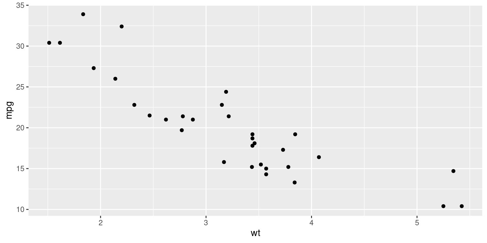

install.packages("ggplot2")Exploring R Packages
Chapter 2
R packages are collections of code, data, and documentation that enhance the capabilities of R, a programming language and software environment used for statistical computing and graphics!
R packages are created by R users and developers and provide additional tools, functions, and datasets that serve various purposes, such as data analysis, visualization, and machine learning.
They can be obtained from various sources, including the Comprehensive R Archive Network (CRAN), Bioconductor, GitHub, and other online repositories.
To utilize R packages, they can be imported into R using the
library()function, allowing access to the functions and data within them for use in R scripts and interactive sessions. [1]
Benefits of R Packages
There are numerous advantages to using R packages:
Reusability: R packages enable users to write code that is readily reusable across applications. Once a package has been created and published, others can install and use it, sparing them time and effort in coding.
Collaboration: Individuals or teams can develop packages collaboratively, enabling the sharing of code, data, and ideas. This promotes collaboration within the R community and the creation of new tools and techniques.
Standardization: Packages help standardize the code and methodology used for particular duties, making it simpler for users to comprehend and replicate the work of others. This decreases the possibility of errors and improves the dependability of results.
Scalability: Packages can manage large data sets and sophisticated analyses, enabling users to scale up their work to larger, more complex problems.
Accessibility: R packages are freely available and can be installed on a variety of operating systems, making them accessible to a broad spectrum of users. [1]
Comprehensive R Archive Network (CRAN)
The Comprehensive R Archive Network (CRAN) is a global network of servers dedicated to maintaining and distributing R packages. These packages consist of code, data, and documentation that enhance the functionality of R.
CRAN serves as a centralized and well-organized repository, simplifying the process for users to find, obtain, and install the required packages. With thousands of packages available, users can utilize the install.packages() function in R to download and install them.
CRAN categorizes packages into various groups such as graphics, statistics, and machine learning, facilitating easy discovery of relevant packages based on specific needs.
CRAN is maintained by the R Development Core Team and is accessible to anyone with an internet connection, ensuring broad availability and accessibility. [2]
Installing a R Package
The
install.packages()function can be employed to install R packages.For instance, to install the
ggplot2package in R, we would execute the following code:
Executing the code provided will download and install the
ggplot2package, along with any necessary dependencies, on our system.It’s important to remember that a package needs to be installed only once on our system. Once installed, we can easily import the package into our R session using the
library()function.For example, to import the
ggplot2package in R, we can execute the following code:
library(ggplot2)- By executing the provided code, we will enable access to the functions and datasets of the
ggplot2package for use within our R session.
Popular R Packages
There are several popular R packages useful for summarizing, transforming, manipulating and visualizing data. Here is a list of some commonly used packages along with a brief description of each:
dplyr: A grammar of data manipulation, providing a set of functions for easy and efficient data manipulation tasks like filtering, summarizing, and transforming data frames.tidyr: Provides tools for tidying data, which involves reshaping data sets to facilitate analysis by ensuring each variable has its own column and each observation has its own row.reshape2: Provides functions for transforming data between different formats, such as converting data from wide to long format and vice versa.data.table: A high-performance package for data manipulation, offering fast and memory-efficient tools for tasks like filtering, aggregating, and joining large data sets.lubridate: Designed specifically for working with dates and times, it simplifies common tasks like parsing, manipulating, and formatting date-time data.stringr: Offers a consistent and intuitive set of functions for working with strings, including pattern matching, string manipulation, and string extraction.ggplot2: A powerful and flexible package for creating beautiful and customizable data visualizations using a layered grammar of graphics approach.plotly: Enables interactive and dynamic data visualizations, allowing users to create interactive plots, charts, and dashboards that can be explored and analyzed. [2]
Sample Plot
As an illustration, here is a sample code for a scatterplot created using the ggplot2 package.
Figure 1 considers the mtcars dataset inbuilt in R and illustrates the relationship between the weight of cars measured in thousands of pounds and the corresponding mileage measured in miles per gallon.
library(ggplot2)
data(mtcars)
ggplot(mtcars, aes(wt, mpg)) +
geom_point()

Here, the command library(ggplot2) loads the ggplot2 package, making its functions available for use.
Getting help
If we require assistance with an R package, there are several avenues we can explore:
Documentation: Most R packages include comprehensive documentation that covers functions, datasets, and usage examples. To access the documentation, we can use the
help()function or type?package_namedirectly in the R console, replacingpackage_namewith the specific package we want to learn more about.Integrated help system: R provides an integrated help system that offers documentation and demonstrations for functions and packages. To access this help system, we can use the commands
help(topic)or?topicin the R console, wheretopicrepresents the name of the function or package we require assistance with.Online Resources: Numerous online resources are available for obtaining help with R packages. Blogs, forums, and question-and-answer platforms like Stack Overflow offer valuable insights and solutions to specific problems. These platforms are particularly helpful for finding answers to specific questions and obtaining general guidance on package usage. [3]
Summary of Chapter 2 – R Packages
Chapter 2 delves into the world of R packages, explaining what they are, where they can be procured, and how they can be put to use. Defined as clusters of code, data, and relevant documentation, R packages extend the capabilities of R for users. These packages are available from a variety of digital repositories, such as CRAN and GitHub, and can be incorporated into R via the library() function.
The advantages of utilizing R packages are manifold, including the ability to reuse and share code, collaborate on development, standardize methodologies, handle large datasets, and operate across different operating systems.
Special emphasis is given to the Comprehensive R Archive Network (CRAN), a central hub for R packages, making it easier for users to find and install the packages they need. The process for installing an R package typically utilizes the install.packages() function, and its subsequent import via the library() function.
The chapter also furnishes a list of well-regarded R packages, each catering to a distinct need, from dplyr for manipulation of data, tidyr for rearranging data, ggplot2 for designing visualizations, among others. A practical example of using the ggplot2 package to generate a scatterplot is provided.
For users who encounter challenges, the chapter recommends consulting the documentation that accompanies each package, making use of the help system built into R, or exploring online resources such as blogs, forums, and Q&A websites.
References
[1] Hadley, W., & Chang, W. (2018). R Packages. O’Reilly Media.
Hester, J., & Wickham, H. (2018). R Packages: A Guide Based on Modern Practices. O’Reilly Media.
Wickham, H. (2015). R Packages: Organize, Test, Document, and Share Your Code. O’Reilly Media.
[2] Wickham, H., François, R., Henry, L., & Müller, K. (2021). dplyr: A Grammar of Data Manipulation. R Package Version 1.0.7. Retrieved from https://CRAN.R-project.org/package=dplyr
Wickham, H., & Henry, L. (2020). tidyr: Tidy Messy Data. R Package Version 1.1.4. Retrieved from https://CRAN.R-project.org/package=tidyr
Wickham, H., Chang, W., Henry, L., Pedersen, T. L., Takahashi, K., Wilke, C., & Woo, K. (2021). ggplot2: Create Elegant Data Visualisations Using the Grammar of Graphics. R Package Version 3.3.5. Retrieved from https://CRAN.R-project.org/package=ggplot2
Wickham, H. (2019). reshape2: Flexibly Reshape Data: A Reboot of the Reshape Package. R Package Version 1.4.4. Retrieved from https://CRAN.R-project.org/package=reshape2
Dowle, M., Srinivasan, A., Gorecki, J., Chirico, M., Stetsenko, P., Short, T., … & Lianoglou, S. (2021). data.table: Extension of data.frame. R Package Version 1.14.0. Retrieved from https://CRAN.R-project.org/package=data.table
Grolemund, G., & Wickham, H. (2011). Dates and Times Made Easy with lubridate. Journal of Statistical Software, 40(3), 1-25.
Wickham, H. (2019). stringr: Simple, Consistent Wrappers for Common String Operations. R Package Version 1.4.0. Retrieved from https://CRAN.R-project.org/package=stringr
Sievert, C. (2021). plotly: Create Interactive Web Graphics via ‘plotly.js’. R Package Version 4.10.0. Retrieved from https://CRAN.R-project.org/package=plotly
[3] R Core Team. (2021). Writing R Extensions. Retrieved from https://cran.r-project.org/doc/manuals/r-release/R-exts.html